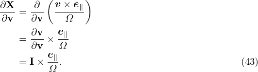
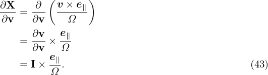

Since the deï¬nition of the guiding-center variables (X,𝜀,μ,α) involves the macroscopic (equilibrium) ï¬elds B0 and E0, to further simplify Eq. (33), we need to separate electromagnetic ï¬eld into equilibrium and perturbation parts. Writing the electromagnetic ï¬eld as
|
| (34) |
and
 | (35) |
then substituting these expressions into equation (33) and moving all terms involving the perturbed ï¬elds to the right-hand side, we obtain
where δR is deï¬ned by Next, let us simplify the left-hand side of Eq. (36). Note that
 | (38) |
where vE0 is deï¬ned by vE0 = cE0 × e∥∕B0, which is the E0 × B0 drift. Further note that
which can be combined with v ⋅ ∂fg∕∂X term, yielding v∥e∥⋅ ∂fg∕∂X. Finally note that Using Eqs. (38),  (39), and  (40), the left-hand side of equation (36) is written as which corresponds to Eq. (7) in Frieman-Chen’s paper[3]. [In Frieman-Chen’s equation (7), there is a term
 (E − E0) ⋅ v (E − E0) ⋅ v
|
where E is the macroscopic electric ï¬eld and is in general different from the E0 introduced when deï¬ning the guiding-center transformation. In my derivation  E0 is chosen to be equal to the macroscopic electric ï¬eld thus the above term does not appear.]
In expression (41), Lg is often called the unperturbed Vlasov propagator in guiding-center coordinates (X,𝜀,μ,α).
Using the above results, Eq. (36) is written as
 | (42) |
i.e.
It is instructive to consider some special cases of the above complicated equation. Consider the case that the equilibrium magnetic ï¬eld B0 is uniform and time-independent, E0 = 0, and the electrostatic limit δB = 0, then equation (43) is simpliï¬ed as
 | (46) |
i.e., the gyro-angle symmetry discussed in Sec. 1.2.
![[ ]
∂fg + v⋅ ∂fg + v⋅ [λB1 + λB2]fg − q-E0∂fg
∂t ∂X m ∂𝜀( )
+ q-(E + v × B )× ( e∥)⋅ ∂fg+ -q(v × B )⋅ eα∂fg
m 0 0 Ω ∂X m 0 v⊥ ∂α
q ( ∂fg v⊥ ∂fg eα∂fg )
+ m-E0 ⋅ v-∂𝜀 + B--∂-μ + v--∂α
0 ⊥
= δRfg, (36)](nonlinear_gyrokinetic_equation40x.png)

![∂fg ∂fg ∂fg
∂t + ((v∥e∥ + VE0)⋅ ∂X +) v ⋅[λB1 + λB2]fg − Ω ∂α
-q v-⊥∂fg eα-∂fg
+ m E0 ⋅ B0 ∂μ + v⊥ ∂α ≡ Lgfg (41)](nonlinear_gyrokinetic_equation45x.png)
![∂fg + (v∥e∥ + VE0)⋅ ∂fg
∂t [ ( ) ∂X ]
+v ⋅ v × -∂- e∥ ⋅ ∂fg + ∂μ∂fg + ∂α-∂fg − Ω ∂fg
∂x Ω ∂X ∂x ∂μ ∂x ∂α ∂α
q ( v⊥ ∂fg eα∂fg)
+ m-E0 ⋅ B0-∂μ- + v⊥-∂α
( e ) ( )
= − q-(δE + v × δB)× -∥ ⋅ ∂fg− -q(v× δB )⋅ eα∂fg
m ( Ω ∂X ) m v⊥ ∂α
− q-δE ⋅ v∂fg + v⊥-∂fg + eα∂fg . (43)
m ∂𜀠B0 ∂μ v⊥ ∂α](nonlinear_gyrokinetic_equation49x.png)